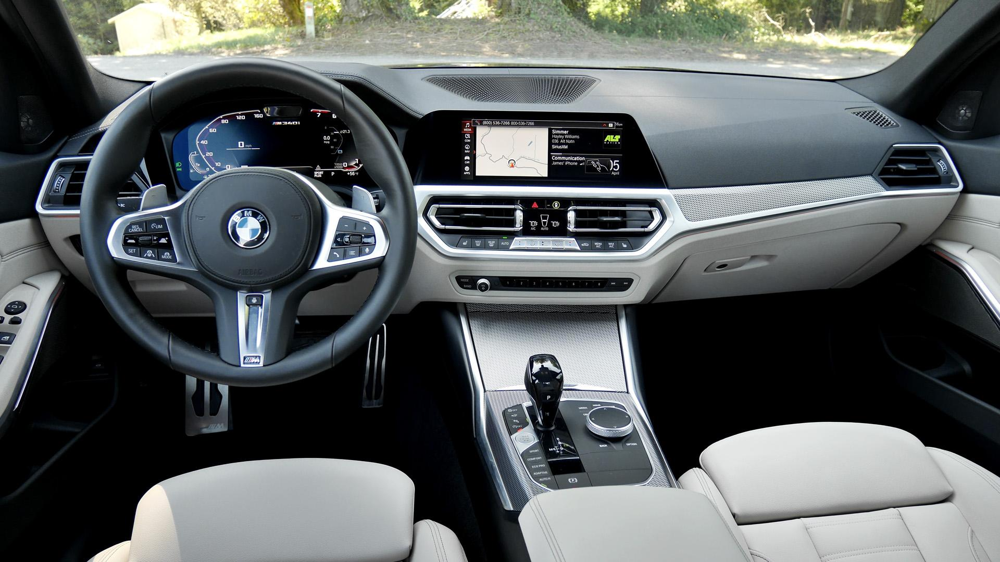

A șaptea generație (G20/G21/G28; 2018)
A șaptea generație a gamei BMW Seria 3 este formată din BMW G20 (versiunea sedan) și BMW G21 (versiunea wagon, comercializată sub numele de 'Touring'). G20 / G21 este în producție de la mijlocul lunii octombrie 2018 cu un facelift în iulie 2022 și este adesea denumit colectiv G20.
M340i, unul dintre primele modele din gamă, a devenit disponibil pentru vânzare în primăvara anului 2019, cu modelul hibrid plug-in 330E programat pentru lansare în 2020. Seria 3 Gran Turismo fastback a fost întrerupt pentru generația G20.
Pentru generația G20, BMW a început producția în Mexic pentru diferite piețe mondiale, inclusiv SUA, înlocuind fabrica Rosslyn din Africa de Sud, unde au fost asamblate vehiculele anterioare din generația F30.
Dezvoltarea
La sfârșitul lunii noiembrie 2015, o propunere finală de proiectare pentru succesorul Seriei 3 F30 de Alexey Kezha din totalul de 3, a fost aleasă de conducerea BMW, așa cum a raportat Auto Bild în octombrie 2015. Noua Serie 3, numită intern G20, a fost dezvăluită la Salonul Auto de la Paris din 2018 pe 2 octombrie 2018, și a fost disponibil pentru vânzare în martie 2019. În 2023, testele efectuate de Universitatea de Tehnologie din Graz au constatat că versiunea hibridă plug-in a mașinii emite de peste trei ori mai mult dioxid de carbon pe kilometru decât susțin cifrele oficiale, cu 112 grame eliberate pe kilometru parcurs în testul universităților, spre deosebire de afirmația oficială de 36 de grame eliberate pe kilometru parcurs.
Seria 3 G20 se bazează pe platforma Cluster Architecture (CLAR) și are o utilizare sporită a oțelului și aluminiului de înaltă rezistență. G20 are o suspensie față MacPherson și suspensie spate multi-link, cu un sistem hidraulic de amortizare pentru a absorbi mai bine impacturile.
Echiparea
G20 este disponibil în pachetul Advantage, Sport Line, Luxury Line sau M Sport. Echipamentul Standard include faruri full LED și stopuri, control automat al climatizării, faruri automate și ștergătoare cu senzor de ploaie, scaune spate rabatabile 40:20:40 și sisteme de asistență a șoferului, inclusiv avertizare de părăsire a benzii și avertizare de coliziune cu intervenție de frânare.
Toate modelele (cu excepția celor echipate cu sistemul de propulsie plug-in hybrid) au iDrive 6.0 cu un ecran de 8,8 inci și un grup de instrumente hibrid numit "Live Cockpit Plus" ca standard. Sistemul poate fi actualizat la iDrive 7.0 cu un ecran de 10,25 inci și un grup de instrumente digitale de 12,3 inci numit "Live Cockpit Professional" cu modele hibride plug-in care îl primesc ca echipament standard. iDrive 7.0 are actualizări over-the-air pentru hărțile de navigație și sistemul de operare, și are un asistent digital controlat vocal care poate fi activat spunând "Hei BMW". Asistentul poate controla funcțiile din mașină și este integrat cu Microsoft Office 365 și Skype for Business.
De la mijlocul anului 2020, sistemul Live Cockpit Plus a fost actualizat la același sistem iDrive 7.0 ca în Live Cockpit Professional, grupul de instrumente revenind la stilul tradițional de manometre analogice, iar afișajul de 8,8 inci a rămas același cu sistemul bazat pe iDrive 6.0. Sistemul de oprire a pornirii motorului utilizează sistemul de navigație pentru a preveni opririle inutile ale motorului.
Echipamentul opțional include BMW LaserLight, o cheie cu display BMW, embleme fixe pentru roți și un covor lumions de bun venit. Un sistem de chei digitale permite unui smartphone să blocheze sau să deblocheze vehiculul folosind comunicații în câmp apropiat și va porni motorul atunci când este plasat în tava de încărcare fără fir. Sistemul opțional parking assistant afișează o vedere tridimensională la 360 de grade a mașinii și a împrejurimilor sale, care poate fi vizualizată și de la distanță în aplicația BMW ConnectedDrive.
Modelele 318-330 cu pachetul M Sport și modelele M340 pot fi echipate cu piese M Performance. Aceasta include un splitter, spoiler, lip, țevi de eșapament, frâne sport, stopuri mai întunecate și mai multe piese din fibră de carbon.
Doar modelele 318d și 320d selectate sunt disponibile cu o transmisie manuală cu 6 trepte, deși pe unele piețe 318i este disponibil și cu ea.
BMW a implementat controversat o taxă anuală pentru accesul la Apple CarPlay, o caracteristică încorporată în mașină și pentru care BMW nu plătește nicio taxă anuală sau alte cheltuieli continue. Începând cu decembrie 2019, se raportează că această taxă nu va mai fi percepută, deoarece BMW a revenit asupra acestei decizii.
În martie 2019, la Salonul Auto de la Geneva, a fost introdus modelul 330e iPerformance, care își împărtășește motorul cu 320i și un motor electric de 50 kW (67 CP), are o autonomie electrică maximă de 60 km (37 mi). Are o baterie de 12 kWh (9,6 kWh utilizabilă) împreună cu un sistem nou dezvoltat numit "XtraBoost" care permite o creștere temporară a puterii de la motorul electric de până la 30 kW (40 CP).
Facelift-ul
Un facelift (LCI) a fost anunțat în mai 2022 pentru a șaptea generație BMW Seria 3.
Modelul actualizat are bare de protecție față și spate noi, faruri noi și o grilă ușor modificată. Farurile au o nouă semnătură DRL "în formă de l inversată" (care este acum standard pe toate modelele), iar opțiunea Laserlight de top este înlocuită cu noi unități LED adaptive cu funcționalitate matrix high beam. Grila își menține proporțiile generale, în timp ce bara de protecție primește modele noi atât pentru versiunea de bază, cât și pentru pachetul M Sport. Ambele au perdele de aer laterale noi, în timp ce acestea din urmă au o admisie centrală mai mare (deși o parte din ea servește doar în scopuri de proiectare) și un stil mai agresiv. Farurile din spate au același design ca modelul 2019, dar sunt completate de baraje de protecție nou proiectate. Versiunea de bază are grafică colorată a caroseriei, în timp ce M Sport are un element mare, negru lucios, care încorporează un difuzor fals și două reflectoare dispuse vertical.
Interiorul primește o actualizare semnificativă, tabloul de bord fiind modelat de un nou afișaj dublu curbat, care vine standard și dispune de iDrive cu sistemul de Operare BMW 8.
Transmisia automată ZF cu 8 trepte este, de asemenea, echipată standard, înlocuind în întregime transmisia manuală cu 6 trepte, iar o nouă manetă de selectare a vitezelor este, de asemenea, prezentă.